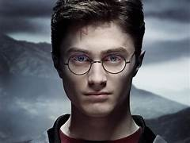
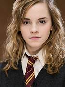
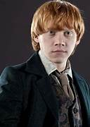
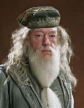
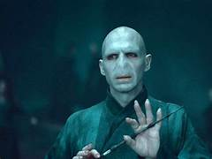

PERSONAJES PRINCIPALES
El protagonista de la historia, conocido como El Niño que Vivió. Es huérfano y descubre a los 11 años que es mago. Es valiente, leal y siempre está dispuesto a luchar contra el mal.

La bruja más inteligente de su generación. Es hija de muggles y destaca por su amor al estudio y su increíble habilidad con los hechizos.

El mejor amigo de Harry. Viene de una familia numerosa y pobre, pero es leal y valiente. Aunque a veces se siente opacado, demuestra ser un gran compañero.

El director de Hogwarts y uno de los magos más poderosos. Siempre ayuda a Harry y conoce los secretos más oscuros del mundo mágico.

El mago tenebroso que busca dominar el mundo y acabar con Harry Potter. Su verdadero nombre es Tom Riddle.
